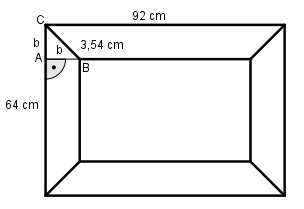

Aufgabe 198 Ein rechteckiger Bilderrahmen mit den äußeren Abmessungen 64 cm * 92 cm ist aus Holzleisten zusammengesetzt. An den Ecken ist unter 45° ein 3,54 cm langer Gehrungsschnitt nötig. Wie groß sind die innere Rahmenfläche A und die Breite b der Leisten?

Satz von Pythagoras im Dreieck ABC: 3,542 = b2 + b2 = 2 * b2 |:2 b2 = 6,27 |√ b = 2,5 cm Kurze Seite innen l1: l1 = 64 cm – 2 * 2,5 cm = 59 cm Lange Seite innen l2: l2 = 92 cm – 2 * 2,5 cm = 87 cm Innenfläche A: A = 59 cm * 87 cm = 5 133 cm2